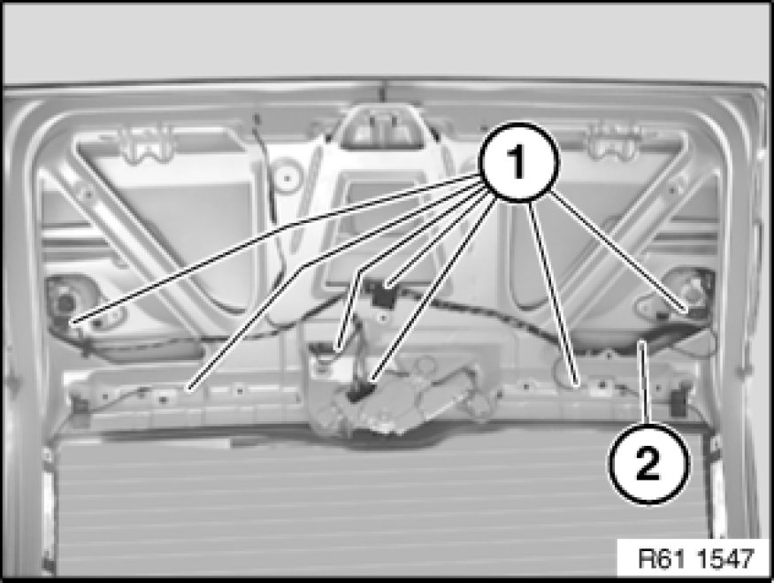
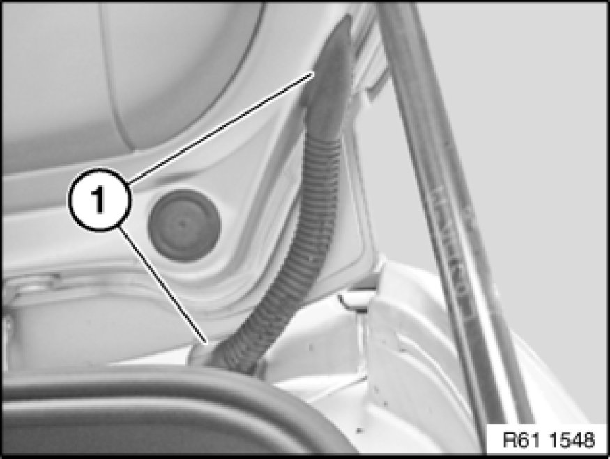
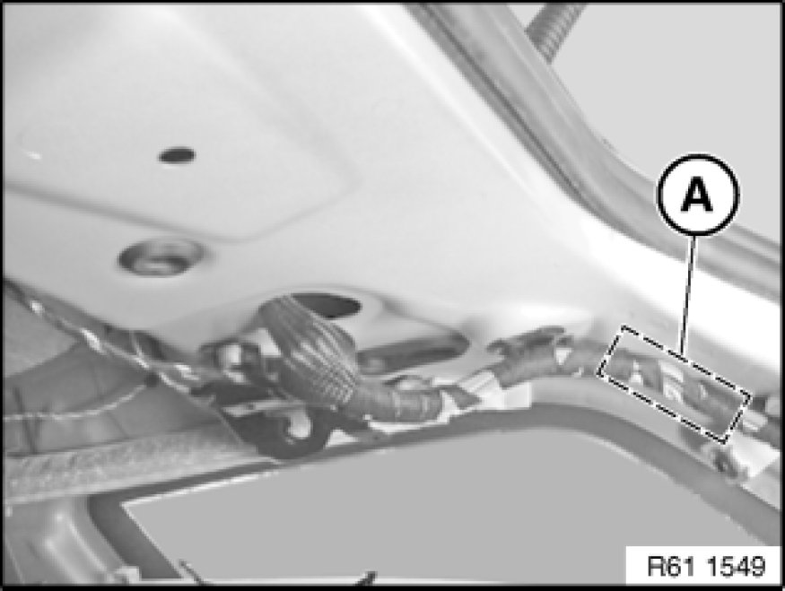

Replacing Wiring Harness for Rear Lid on Right
61 12 137 - Replacing wiring harness for rear lid on right

Necessary preliminary tasks:
- Disconnect battery negative lead Disconnecting and Connecting Battery Negative Lead
- Remove trim for rear lid
- Remove roofliner

Disconnect plug connection (1).
Feed wiring harness (2) out of rear lid.
Installation:
Correctly lay wiring harness (2).

Installation:
Make sure rubber seal (1) is correctly installed in groove on frame.

Remove wiring harness sheathing in area (A).
Cut one cable after another at the appropriate point.
Connect cables of new wiring harness with butt connectors and heat-shrink sleeves.
Insulate wiring harness with insulating tape and secure in place.
Installation:
Correctly lay wiring harness (2).